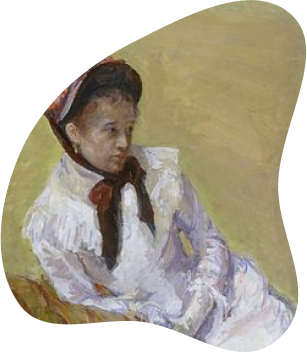
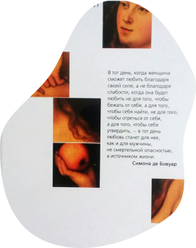

Гайд
С данного раздела намного проще начать погружение в феминизм, так как изучая разделы гайда, вы можете перейти на нужную тему прямо из него.


Вумен момент —образовательный медиапортал, где собраны материалы о феминизме, которые описаны понятным для всех языком.
С данного раздела намного проще начать погружение в феминизм, так как изучая разделы гайда, вы можете перейти на нужную тему прямо из него.
В этом разделе собраны статьи о феминистском искусстве.
Все необходимые ресурсы для более глубокого изучения заинтересовавшей вас темы.
Важные события в мире феминизма с самых ранних периодов до наших дней.

сексизм
Сексизм — набор предрассудков и предвзятое отношение к людям или дискриминация людей по признаку пола или гендера; предубеждение, негативное отношение или антипатия по отно-шению к людям определённого пола.
Наш сайт стремится быть понятным для каждого пользователя, поэтому там, где встречаются термины, мы создаём подсказку, будто читатель обращается к словарю.


Ждём тебя среди читателей нашего медиа. Начнём узнавать о женщинах и феминизме больше.


womanmoment@edu.hse.ru
Россия, Москва
Улица Малая Пионерская, 12